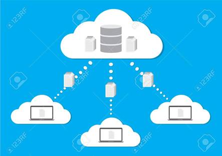

Una base de datos en la nube es un servicio de base de datos creado y accedido por medio de una plataforma en la nube. Sirve a muchas de las mismas funciones que una base de datos tradicional, con la flexibilidad añadida de la computación en la nube.
Para implementar la base de datos, los usuarios instalan el software en una infraestructura en la nube.
Características clave:
-Un servicio de base de datos creado y accedido a través de una plataforma en la nube.
-Permite a los usuarios de empresa alojar bases de datos sin comprar hardware dedicado
-Puede ser gestionado por el usuario o ofrecido como un servicio y gestionado por un proveedor.
-Puede dar soporte a las bases de datos SQL (incluso MySQL) o NoSQL.
-Se ha accedido por medio de una interfaz web o una API proporcionada por el proveedor.
Las bases de datos relacionales en la nube consisten en una o más tablas de columnas y filas, que te permiten organizar los datos en relaciones predefinidas para comprender la relación lógica de los datos. Por lo general, estas bases de datos usan un esquema de datos fijo, y puedes usar el lenguaje de consulta estructurado (SQL) para consultar y manipular datos. Son muy coherentes, confiables y son más adecuados para manejar grandes cantidades de datos estructurados.
Las bases de datos no relacionales en la nube almacenan y administran datos no estructurados, como mensajes de texto y correos electrónicos para mensajes móviles, documentos, encuestas, archivos de rich media y datos de sensores.
Las bases de datos en la nube ofrecen flexibilidad, confiabilidad, seguridad, asequibilidad y mucho más. Proporcionar una base sólida para crear aplicaciones empresariales modernas. En particular, pueden adaptarse con rapidez a las cargas de trabajo y las demandas cambiantes sin aumentar la carga de trabajo de los equipos ya cargados.
